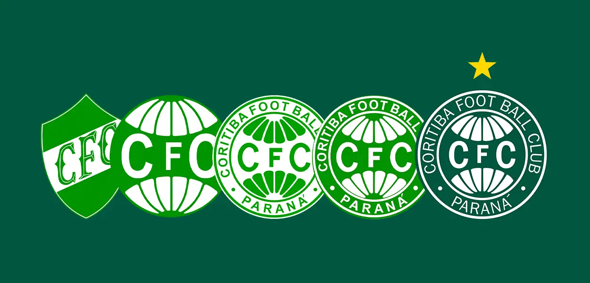
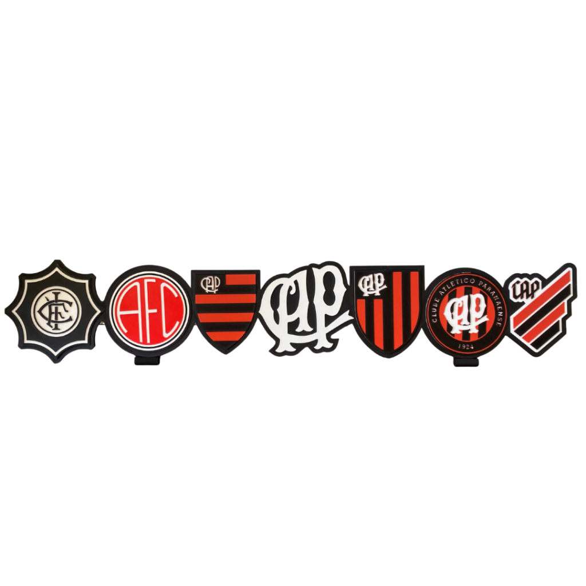
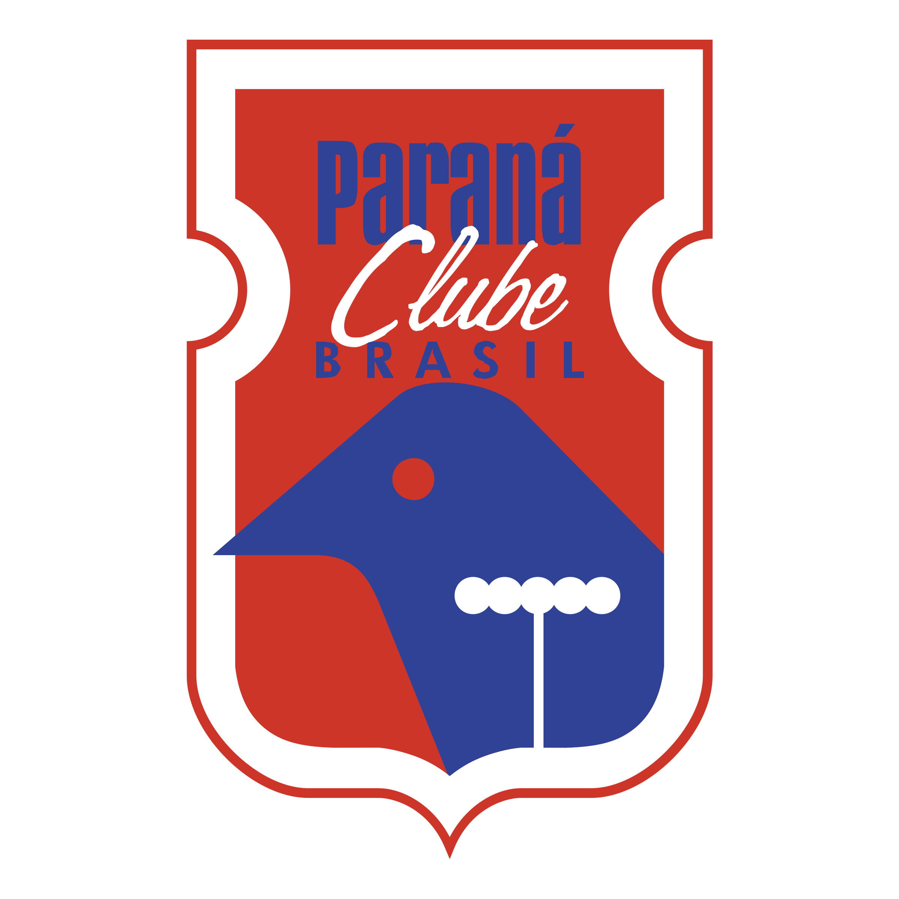

Subtema: A devoção e a genialidade dos grandes nomes da história coxa-branca. Dirceu Krüger e Alex representam a essência do Coritiba em eras diferentes. Krüger dedicou mais de meio século ao clube como jogador, técnico e dirigente, tornando-se o maior símbolo de lealdade à camisa verde e branca. Décadas depois, Alex encantou o futebol mundial com sua inteligência e pé esquerdo apurado, retornando ao Couto Pereira no fim da carreira para selar uma trajetória de idolatria e magia.

Subtema: A evolução da paixão rubro-negra representada por seus maiores expoentes. A história do Furacão une a tradição dos gramados antigos com a exigência do futebol moderno. Sicupira marcou época como o maior artilheiro da história do clube, eternizando a garra e a identificação com a arquibancada. Anos mais tarde, nomes como Alex Mineiro, herói do título brasileiro de 2001, e Fernandinho mantiveram essa linhagem de protagonismo e conquistas marcantes.

Subtema: Os heróis da fusão que dominaram o estado na década de 1990. O Paraná Clube construiu uma era de ouro marcante logo após sua fundação em 1989. O atacante Saulo, conhecido como "Pássaro do Vila", virou lenda ao liderar o ataque tricolor no histórico pentacampeonato estadual com gols decisivos. Ao seu lado, a visão de jogo e a elegância de Ricardinho mostram a força da formação paranista, deixando uma marca inesquecível na memória do torcedor.

Subtema: Os grandes nomes que brilharam fora da capital e fortaleceram o esporte no estado. A história do futebol no Paraná não se limita à capital e conta com ídolos marcantes no interior. Jogadores como Gheller, símbolo do Londrina nos anos de glória nacional do clube, e figuras emblemáticas do Operário de Ponta Grossa ergueram o orgulho de suas regiões. Esses atletas provaram que o talento e a paixão pelo futebol estão presentes em cada canto do estado.
Dirceu Krüger viveu um momento emblemático em 2016, quando os próprios torcedores do Coritiba se mobilizaram em um financiamento coletivo para erguer uma estátua de bronze em tamanho real no Estádio Couto Pereira. A homenagem eternizou ainda em vida o ídolo que dedicou mais de 50 anos consecutivos ao clube como atleta, técnico e dirigente.